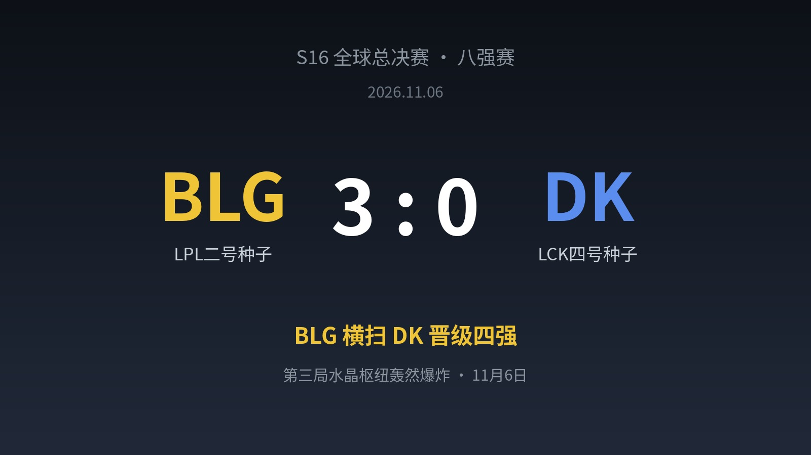
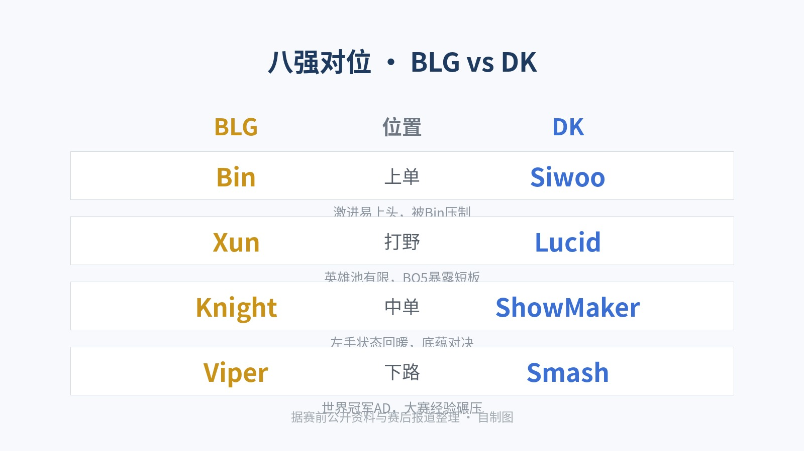
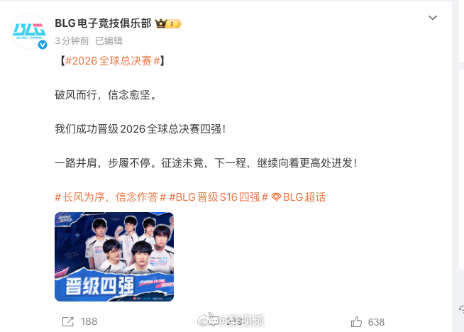

▲ 比赛结果（自制图）
赛前，ShowMaker说："没有我们赢不了的队伍。"
三个小时后，BLG用三个干净利落的大胜局，帮他把这句话完整地咽了回去。3-0，横扫，DK回家。
01 一场"复仇局"
这场横扫，爽点不只是比分本身。
瑞士轮出线关键战，BLG 2-0 击败 HLE——正是今年 MSI 决赛击败他们捧杯的那支队伍；八强战，他们又淘汰了 DK——今年的 EWC 冠军，同样是在 EWC 八强淘汰 BLG 后一路登顶的队伍。
换句话说，BLG本届世界赛，先后送走了今年的两座国际赛冠军。年初先锋赛自己拿到的队史国际赛首冠，加上这两场复仇，含金量拉满。
再翻翻BLG的八强战履历：S13八强送走GEN，S14八强送走HLE，今天S16八强零封DK——队史三次打进S赛八强，三次全部踩着LCK队伍晋级。LCK的"八强梦魇"，实至名归。
02 三局复盘：8条小龙，一条没放
首局，双方围绕下路反复开团，Xun与Knight的中野联动打出关键控制，BLG控下龙魂，29分钟控下远古龙一波推平基地。
第二局，BLG连续控下四条小龙，还偷掉了远古龙，把DK的资源空间压到零，乘势一波拿到赛点。
第三局，Bin在抗住越塔时打出1换2，随后连着两次单杀，把上路彻底打成突破口。32分钟BLG收下大龙，一波结束比赛。
整轮BO5，8条小龙，BLG一条没让。LCK解说赛后感叹："Bin第三赛段回来之后，失去了对线锋芒，却稳得可怕。"那个曾经执着于单杀的少年，学会了用脑子赢比赛。

▲ 对位一览（自制图，据公开报道整理）
03 韩国解说当场破防
比赛的最后时刻，韩国解说席传出了本届S16最出圈的一段音频：
"啊啊啊，这能被这样虐吗？披萨！差距太大了啊！"
一句"披萨"，一夜之间成了LPL观众的接头暗号。
而Bin在世界赛宣传片里说过的话，此刻听来格外提气："LCK拿了太多冠军，这次我要战胜所有LCK队伍，走到最后。"
04 四强已定两席，半决赛见
随着BLG晋级，四强已定三席：IG、GEN、BLG。最后一个名额，明天见分晓——T1迎战KC，胜者将在半决赛与BLG相遇。
BLG官微赛后发文："破风而行，信念愈坚。我们成功晋级2026全球总决赛四强！一路并肩，步履不停。征途未竟，下一程，继续向着更高处进发！"

▲ BLG官微赛后发文（图源网络）
首日0-4的阴霾、一号种子的出局，都没能拦住LPL的队伍继续往前走。半决赛，无论对面是T1还是KC，都先赢下来再说。
评论区聊聊：半决赛你最想看到BLG碰谁？另外，"披萨"这个梗你给几分？
—— LPL，今年真的不一样 ——
信息来源：LPL赛事官方、BLG电子竞技俱乐部官微、澎湃新闻/人民电竞、腾讯新闻、直播吧、虎扑等公开报道。比分卡与对位卡为自制图，官微截图图源网络，如有侵权请联系删除。